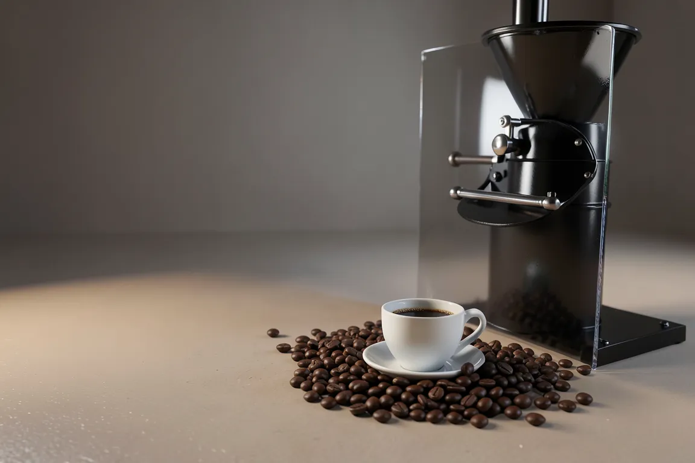

internet · 2023–present · also: visionOS Design, Spatial Computing UI, Glass Windows in Space
Translucent glass windows that float in the user's room at a set distance, lit by the surrounding scene and controlled by eye gaze and hand pinch. Apple introduced it with Vision Pro in 2023.

Core thesis
An interface in space should be a physical presence in the room, so it uses glass that takes light from the real scene and respects the person's field of view.
Design principles
Make windows from a glass material that blends with the room behind it; a standard window is about 1280pt by 720pt at 2 metres distance.
Place content where the eyes rest, within a field of about 30 degrees, and avoid forcing head turns.
Make every target at least 60pt, with 16pt or more of spacing, because eye and pinch input is less precise than a mouse.
Show hover with a highlight on the gazed element, because the eyes are the cursor and the pinch is the click.
Use depth for meaning: lift a modal by 20pt to 40pt in front of its window with a soft shadow.
Use a corner radius of 24pt to 32pt on windows and a full capsule shape on buttons.
Set text in vibrant white or dark label colours that stay legible on glass, at 17pt or larger and weight 500 or more.
Anti-patterns
Opaque dark backgrounds that block the room
Targets smaller than 44pt on an eye-and-pinch device
Text below 17pt or below weight 400 on glass
Hard black drop shadows and flat hard borders
Content pinned to the head at a close distance, which causes eye strain
Windows wider than the field of view, so that the edges need head turns